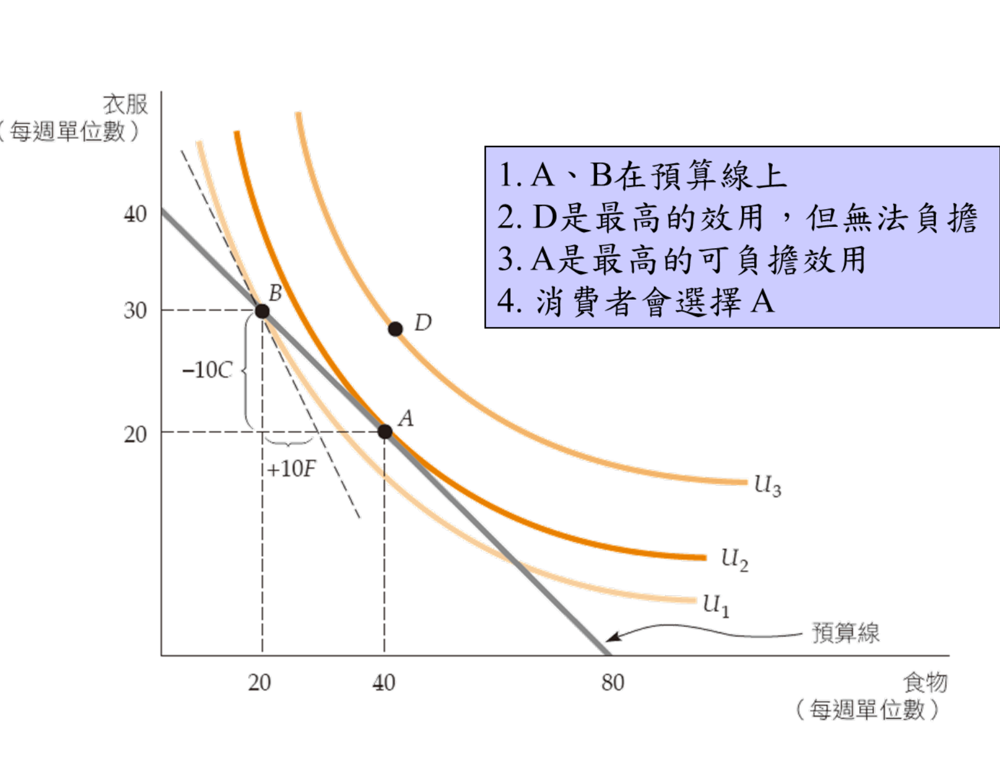
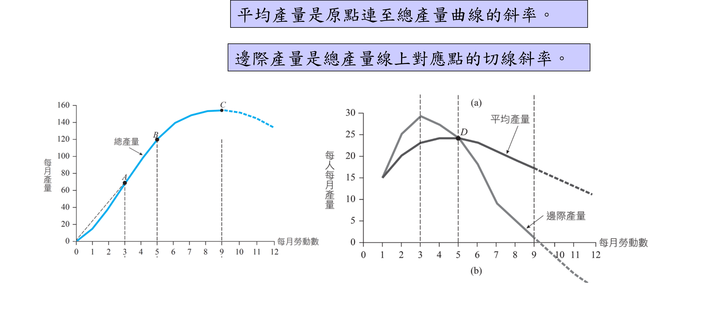
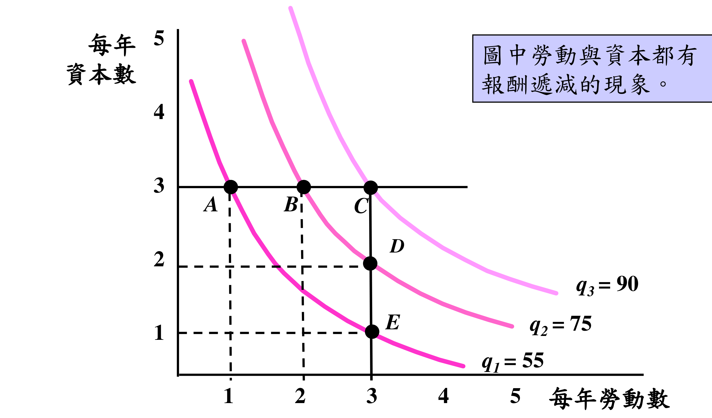

PART 1 · 導論
為什麼要學經濟學？個體經濟學在研究什麼？
🎯 課程目標
鞏固經濟學基礎知識，熟悉分析理論與工具，擴展應用視野，發展出經濟與管理決策能力。
📰 航運市場景氣循環
長榮、萬海 2021 年巔峰→2022 年循環終結。景氣循環（Business Cycle）：產業利潤周期性起伏，是週期性產業的常態。
💾 記憶體「米缸沒米」
三星/海力士/美光將產能移往高階 HBM，傳統 DDR4 供給銳減 → 供給缺乏彈性（Supply Inelasticity）。第四季伺服器記憶體合約價預計漲 40–50%。
❓ 核心問題
這些新聞怎麼和經濟學連結？學完本課程你就能分析背後的供需邏輯。
資源是有限的（時間、金錢、產能），所以每個人、每家公司都面臨「取捨」。DDR4 產線就是有限資源——移往 HBM 就無法同時生產 DDR4，這就是稀少性造成的取捨。
預算有限
如何在有限所得下，選出使效用最大的財貨組合？儲蓄 vs 消費？
時間有限
現在工作 vs 繼續深造？大公司保障 vs 小公司發展？工作 vs 休閒？
資源有限
生產哪些產品？僱用多少勞工？如何以最小成本達到目標產量？
三者共同的核心議題：「取捨」(Trade-off)
個體經濟學就是研究人們在限制條件下如何做理性選擇，而這些選擇最終都會反映在價格上。
🎯 效用極大化的邏輯（Utility Maximization）
理性決策的目標：在限制下追求最大滿足。數學上可以寫成：
白話：在花費不超過收入（I）的前提下，選擇讓自己最滿足的商品組合（x, y）。
理性決策者會持續調整，直到每花1元在不同商品上的邊際收益相等為止。
PART 2 · 價格與市場
價格如何形成？市場是什麼？名目與實質價格有何不同？
消費者
價格決定效用最大化的選擇。
廠商
工資率與機器價格影響生產決策。
勞工
工資（勞動力的價格）左右職涯流動。
「看不見的手」
價格由消費者、勞工與廠商的互動決定，資源自發配置。
政府決定價格
例：北韓以糧食券強制規定交換比例，缺乏市場回饋→資源扭曲。
什麼是市場？
市場是買方與賣方相互影響的組合，透過互動決定產品價格。可以是實體（菜市場）或虛擬（股市、加密貨幣）。
Perfectly Competitive
- 許多買賣方，無人能影響價格
- 產品同質、資訊透明、進出門檻低
- 廠商只能賺正常利潤
- 例：農產品、大眾餐飲、路邊攤
Noncompetitive
- 個別廠商可影響價格（有定價權）
- 卡特爾（Cartel）：生產者聯合行動
- 例：OPEC 控制石油供給
- 例：鼎泰豐的「18摺小籠包」技術壁壘
市場範圍的界定（Market Definition）
台北 vs 全台灣 vs APAC vs 全球
→ 鄰近鼎泰豐的小吃店面臨極大替代壓力
高階公路車（6–40萬）vs 大賣場腳踏車
→ 電輔車（E-bike）自成一個市場
📰 時事：市場範圍與政府干預
美國政府：壟斷疑慮 + 地緣政治
公平交易法審查市場集中度
中國 NDRC 干預，AI 壓縮技術被視為戰略資產
Nominal Price
商品的絕對價格，未依通貨膨脹調整。就是標籤上的數字。
Real Price
相對於整體物價水準的價格，剔除通膨影響，反映真實購買力。
📐 實質價格公式
政府定期調查，衡量「一籃子商品」的整體物價水準。數字越高代表東西越貴。
選定一個「正常年份」作為比較起點，令該年 CPI = 某基準值（如100）。用來衡量其他年份相對漲了多少。
當年標籤上的實際數字，沒有排除通膨。例：2016年雞蛋 $2.47。
換算回基準年的「真實」價格，反映實際購買力是否提升。例：2016年雞蛋實質只值 $0.40。
雞蛋 & 大學學費：名目 vs 實質（以1970年為基年）
| 項目 | 1970 | 1980 | 1990 | 2000 | 2016 |
|---|---|---|---|---|---|
| CPI | 38.8 | 82.4 | 130.7 | 172.2 | 241.7 |
| 雞蛋名目價格 | $0.61 | $0.84 | $1.01 | $0.91 | $2.47 |
| 雞蛋實質價格 | $0.61 | $0.40 | $0.30 | $0.21 | $0.40 |
| 大學學費名目 | $1,784 | $3,499 | $7,602 | $12,922 | $25,694 |
| 大學學費實質 | $1,784 | $1,624 | $2,239 | $2,912 | $4,125 |
衡量一般消費者購買商品的物價變動。
台灣CPI包含：食物、衣著、居住、交通、醫療、教育娛樂、雜項。
核心CPI（Core CPI）：扣除食物與能源（這兩項受天氣/戰爭波動大），留下更穩定的通膨趨勢。
衡量批發/廠商層面的物價變動。
若產品由企業購買 → 用 PPI 轉換。
PPI 是 CPI 的領先指標（廠商先漲成本→再傳導到消費終端）。
PART 3 · 供給與需求
市場如何透過供需互動達到均衡價格？
需求曲線特性
- 負斜率：價格↑ → 需求量↓
- 其他因素不變（Ceteris Paribus）
- QD = QD(P)
需求曲線移動的原因
- 👉 右移（需求增加）：所得增加、替代品漲價、互補品降價、偏好改變、預期漲價
- 👈 左移（需求減少）：所得減少、替代品降價、互補品漲價
供給曲線特性
- 正斜率：價格↑ → 供給量↑
- 其他因素不變
- QS = QS(P)
供給曲線移動的原因
- 👉 右移（供給增加）：原料成本↓、技術進步、廠商數量增加
- 👈 左移（供給減少）：原料成本↑、稅賦增加
⚖️ 均衡（Equilibrium）
供給量 = 需求量時的價格 P₀。無短缺、無剩餘，市場達到穩定。
📦 剩餘（Surplus）
P 高於均衡 → Qs > Qd → 庫存累積 → 廠商降價 → 趨向均衡。
🛒 短缺（Shortage）
P 低於均衡 → Qd > Qs → 供不應求 → 消費者出高價 → 價格上漲 → 趨向均衡。
均衡移動：所得增加 + 原料漲價
供給↓（S左移）：原料漲價 → 均衡價↑、量↓
同時發生：D增加幅度 > S減少幅度 → 均衡價格↑
AI 運算爆發 → 全球對記憶體需求倍增，特別是 HBM（高頻寬記憶體）
三星/海力士/美光將產能移往高階 HBM → DDR4 傳統產線被壓縮（「米缸沒米」）
➜ 悖論：DDR4（舊規格）價格反超 DDR5（新規格）——因為舊系統無法即時切換新規格，「受困需求」在供給急劇縮減下反而推高舊產品價格。
➜ 製造板塊位移：韓國（高階HBM）→ 台灣（南亞科、華邦電遞補中階）→ 中國大陸（介入競爭）
什麼是市場失靈（Market Failure）？
經濟學假設人是理性的，但個體的「局部理性」有時會導致整體的集體非理性（泡沫、過度投機），使市場無法有效率地配置資源，這就叫市場失靈。
「非理性繁榮」
聯準會前主席葛林斯潘（Greenspan）任期長達 19 年，長期維持低利率，初衷是理性的政策引導，卻意外催生資產膨脹與「非理性繁榮（Irrational Exuberance）」，最終引發泡沫。
「政府之手」的強制介入
韓國金融委員會認為開放個股 2–3 倍槓桿 ETF 放大市場非理性，決定干預。結果：三星、海力士股價重挫 ~12%，相關槓桿 ETF 跌幅達 20–30%，連帶波及台灣南亞科等供應鏈。
🔑 初學者重點：市場 vs 政府的角色
多數情況下，供需自動調節，不需干預。
泡沫、壟斷、外部性等市場失靈時，政府介入以恢復效率。
PART 4 · 消費者行為
偏好、預算與選擇——消費者如何做最理性的決定？
三大基本假設
① 完整性
消費者能對所有財貨組合進行比較並排序。
② 遞移性
若 A > B 且 B > C，則 A > C。偏好有一致邏輯。
③ 多比少好
在其他條件相同下，消費者永遠偏好更多財貨。
無異曲線（Indifference Curve）
連結提供相同滿足程度的所有財貨組合。曲線上任何一點對消費者的效用相同。
- 離原點越遠 → 效用越高
- 曲線凸向原點（凸性）
- 兩條無異曲線不相交
邊際替代率 MRS
為獲得多1單位食物願意放棄的衣服量。
= 無異曲線的斜率（負值取正）
MRS 遞減示意（沿曲線移動）
預算線公式
I = 所得，PF = 食物價格，PC = 衣服價格。斜率 = −PF/PC
所得↑
預算線平行外移（兩端點都擴大）
食物價格↓
預算線向外旋轉（食物軸端點遠離）
最適條件
無異曲線與預算線的切點就是最適選擇。此時消費者效用最大，且在預算限制內。
調整邏輯
- MRS > PF/PC → 多買食物、少買衣服
- MRS < PF/PC → 多買衣服、少買食物
- 直到 MRS = PF/PC → 停止調整

PART 5 · 廠商行為
廠商如何將投入（勞力、資本）轉換為產出？
生產函數
每單位勞動投入生產的產出，衡量平均生產力。
每增加1單位勞動所增加的產量。
⚠️ 邊際報酬遞減法則（Law of Diminishing Marginal Returns）
當其他投入固定，某一投入不斷增加，最後會達到額外產量開始減少的一點。

📖 給初學者：怎麼看這兩張圖？
想像一間工廠，機器數量固定，只增加工人數（橫軸＝每月勞動數）。
- 左圖（a）總產量 TP：工人越多，總產出越高，但增加速度先快後慢，到 C 點後甚至開始下滑（人太多反而互相妨礙）。
- 平均產量 AP＝原點拉一條直線連到 TP 曲線上某點的斜率。代表「平均每位工人」的產出。
- 邊際產量 MP＝TP 曲線上某點切線的斜率。代表「再多請 1 位工人」能多生產多少。
- 右圖（b）把 AP、MP 單獨畫出來：兩條都先升後降。MP 會先到頂、再下降，並在 D 點穿過 AP 的最高點。
等產量線（Isoquant）
連結所有能生產相同產量的 K（資本）與 L（勞力）組合。類比消費者的無異曲線。
- 離原點越遠 → 產量越高
- 凸向原點（邊際技術替代率遞減）
邊際技術替代率 MRTS
為維持相同產量，增加1單位勞力所能減少的資本量。沿等產量線向右下移，MRTS 遞減。

📖 給初學者：怎麼看這張圖？
橫軸是勞動（請幾個工人），縱軸是資本（用幾台機器）。每一條彎曲線代表「產量相同」的所有搭配方式——同一條線上的點，產出一樣多。
- 三條線 q₁=55 < q₂=75 < q₃=90：離原點越遠的線，產量越高（多用資源、產更多）。
- 固定資本=3（看 A→B→C）：只增加勞動，從 1→2→3 個工人，產量從 55→75→90，但每多 1 人增加的產量越來越少 → 勞動報酬遞減。
- 固定勞動=3（看 C→D→E）：只減少資本，從 3→2→1 台機器，產量從 90→75→55，這顯示資本報酬遞減。
- 曲線凸向原點：代表 MRTS 遞減——資本越少時，要再少 1 台機器，得補上越來越多的工人才能維持同樣產量。
PART 6 · 成本分析
廠商如何衡量成本？如何達到成本最小化？
看得到的支出
資本設備實際支出、折舊。依國稅局規定認列。
含機會成本
生產資源的全部成本，包含放棄其他用途的機會。
放棄的最高價值
資源用於此用途，放棄的最佳替代用途之價值。
已付出、無法回收
決策時應忽略！沉入成本不影響未來決策。
不隨產出變動的成本。
例：廠房維護、保險、最低雇工費用。
唯一消除方式：歇業。
隨產出增加而增加的成本。
例：原料、薪資。
TC = FC + VC
沉入成本 vs 固定成本
半導體廠花60億美元建廠（沉入成本）可攤提6年，視為每年10億固定成本。但關廠無法省回這10億，故不影響是否停產的決定。
多生產1單位的額外成本
每單位產品的總成本
📐 MC 與 ATC/AVC 的關係
- MC < AVC → AVC 持續下降
- MC > AVC → AVC 持續上升
- MC 從下方穿越 AVC 的最低點
- 同理，MC 也從下方穿越 ATC 的最低點
等成本線（Isocost Line）
固定總成本下所有勞力與資本的組合。斜率 = −w/r
成本最小化條件
等產量線與等成本線的切點。類比消費者 MRS = PF/PC。
規模經濟 vs 規模不經濟
成本<×2
Ec < 1
成本>×2
Ec > 1
總覽：消費者 vs 廠商的對稱關係
| 概念 | 消費者 | 廠商 |
|---|---|---|
| 曲線 | 無異曲線 | 等產量線 |
| 限制 | 預算線 | 等成本線 |
| 最適條件 | MRS = PF/PC | MRTS = w/r |
| 目標 | 效用最大化 | 成本最小化 |
🧮 公式計算機
點擊藍色符號跳至對應欄位 → 填入數字後即時顯示代入結果。
Real Price = (CPI基年 / CPI現年) × 名目價格現年
① CPI 基年：你選定的「起點年份」的物價指數。例如以1970年為基準，1970年的CPI就是38.8。
② CPI 現年：你想換算的「目標年份」的物價指數。1970→2016，CPI從38.8漲到241.7，代表物價漲了約6倍。
③ 名目價格：目標年份的標籤售價，例如2016年雞蛋售價 $2.47。
→ 公式會算出「用1970年的錢衡量，2016年的雞蛋值多少？」
APL = q/L | MPL = Δq/ΔL
APL（平均產量）：5人共生產90個零件，平均每人產出18個 → AP=90÷5=18。衡量「整體平均效率」。
MPL（邊際產量）：再多雇1人，多生產了15個 → MP=15÷1=15。衡量「多雇1人的貢獻」。
→ 當 MP < AP，平均產量下降（邊際報酬遞減開始顯現）。